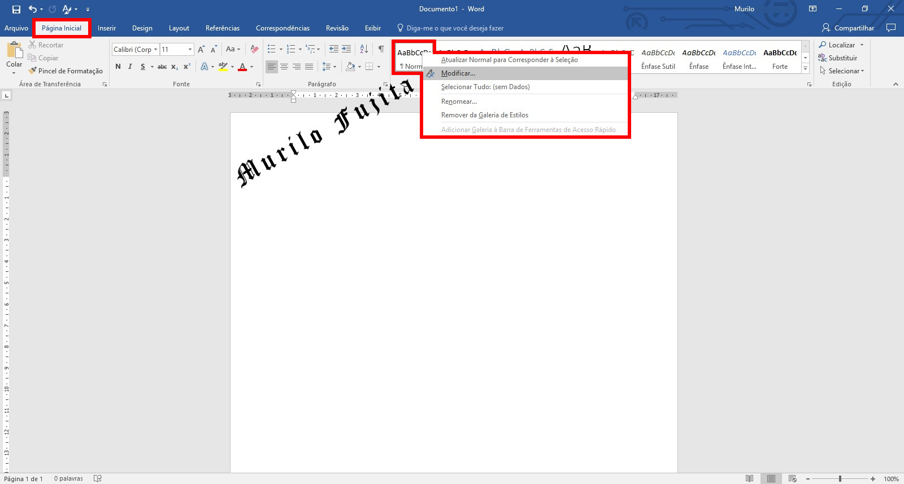
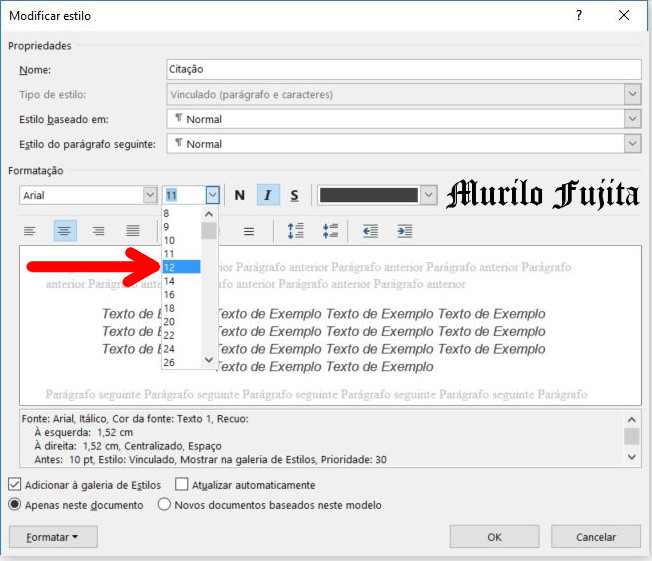
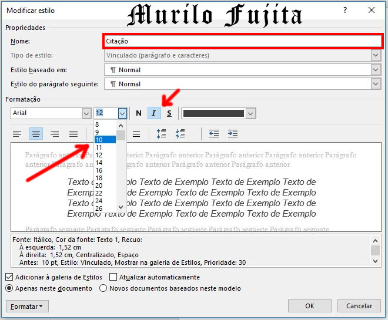

O projeto gráfico é de responsabilidade do autor. A NBR 6024 (2012) não determina a fonte a ser utilizada. Entretanto recomenda-se a utilização de fonte Arial ou Times New Roman, com tamanho 12 para o texto (...).
Clique em Página Inicial.
Posicione o ponteiro do mouse em NORMAL (galeria de estilos) e clique com o botão direito.
Clique em Modificar.
Surge a caixa de diálogo da Figura 2.
Modique a fonte de Calibri (corpo) para uma das fontes permitidas: Arial ou Times New Roman.
Ainda na mesma caixa de diálogo, modifique para a fonte de tamanho 12.
Clique em Ok para confirmar as alterações.
Veja figura 3.
Na página 10, primeiro parágrafo, vamos fazer a configuração da parte em negrito:
O projeto gráfico é de responsabilidade do autor. A NBR 6024 (2012) não determina a fonte a ser utilizada. Entretanto recomenda-se a utilização de fonte Arial ou Times New Roman, com tamanho 12 para o texto, e fonte tamanho 10 para citações de mais de três linhas, notas de rodapé, ficha catalográfica, paginação, legendas das ilustrações e das tabelas.
Clique em página inicial.
Na galeria de estilos, clique na seta indicada pelo círculo vermelho.
Veja figura 4.
Procure pelo estilo com o nome Citação.
Clique com o botão direito sobre o estilo Citação.
Clique em Modificar.
Veja figura 5.
Modifique o tamanho para 10.
Caso sua configuração esteja com o itálico habilitado, clique nele para desabilitar (seta vermelha).
Clique em Ok.
Veja figura 6.
